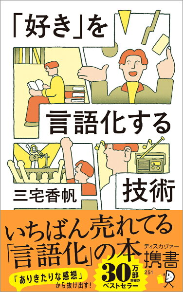
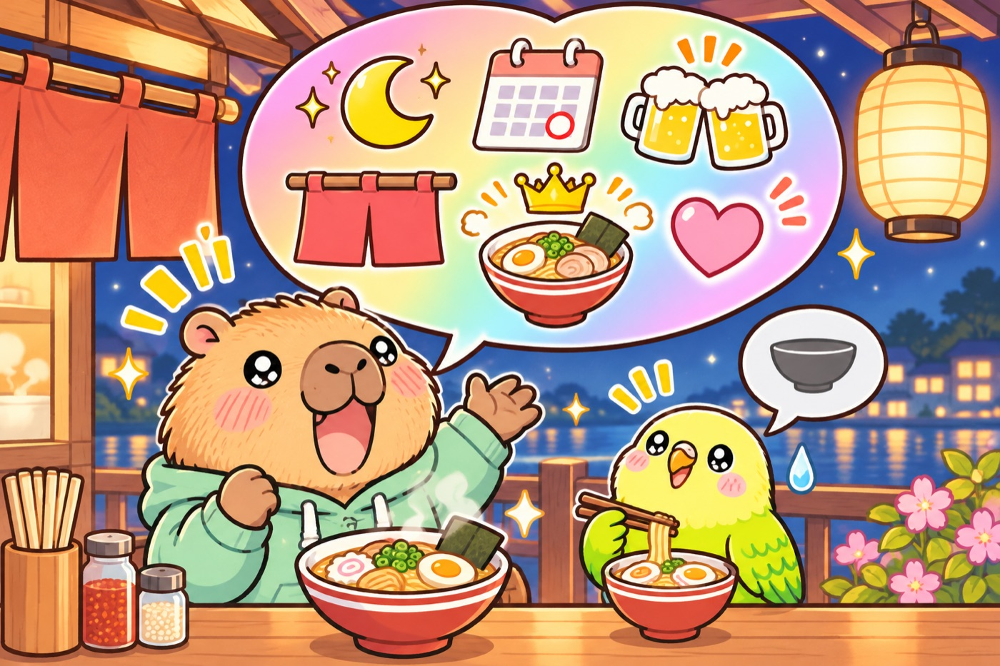
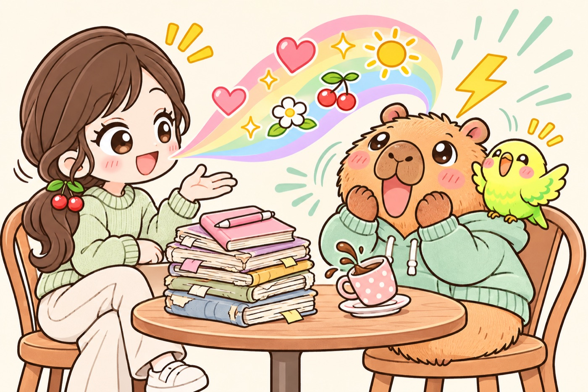
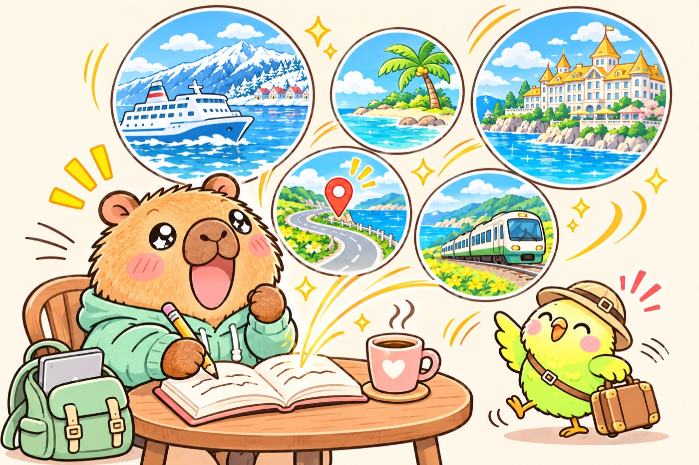

「好き」を言語化する技術
「好き」を言語化する技術
三宅香帆ディスカヴァー・トゥエンティワン
言語化が苦手…って人に、めちゃおすすめの本です🦫

今朝しゃべった声を、そのままお届けします。読むのがしんどい日は、耳でどうぞ😊
♪ BGM：Morning／しゃろう
そんな方、いませんか？😊
みなさん、おはようございます〜！
ストレングスファインダー認定コーチのおけもんです🦫
ジャーナリングコラム、2日目になりました🙌
といっても、これからストレングスファインダーや自分の強みに気づくお話、日々のちょっとした気づき・学びなんかも雑多に混ぜていくかもしれません。ゆるくお付き合いいただけたらうれしいです😊
昨日の1日目は、「書くのは、目的地を忘れないため」というお話でした。
じゃあ、目的地を書いたその次。2日目のテーマは「なぜ、そこへ行きたいのか」です。
たとえば、「美味しいご飯を食べに行きたい」「どこか旅行に行きたい」って決めること、ありますよね。人生もそれと似たようなものだと思うんです。
そうなった時に、「そこへ行く理由」も大事になってきますよね。
実は、そっちのほうが大事かもしれません。
リベの中でも、価値観マップやライフプランマップを作りましょう、というお話が出てきますよね。
書いていると、「どこへ行きたいか」だけじゃなく、「なぜそこへ行きたいのか」も見えてきたりするんです✨
なぜそう言えるのかというと、ノウハウ図書館の記事にも書いたことがあるんですが、自分の強みに気づいている人や、楽しく生きている人には共通点があります。
そういう方々は、もう漏れなく自分のことを言葉にするのが上手なんですよね😳
解像度が高いというか、グラデーションみたいに、いろんな色で表現できるイメージです。
たとえば好きな食べ物でも、「なぜそれが好きなのか」「一人で食べるのがいいのか、みんなで食べるのがいいのか」まで出てきます。
同じ「ラーメンが好き」でも、
ここまで言えると、同じ「好き」でも解像度が全然ちがいますよね🍜✨

この共通点、くわしくはこちらの記事に書いています👇
📚 おけもんのノウハウ図書館の記事 1,000人以上と話してわかった「強みを活かしている人」の共通点 👉 タップして記事を読む リベシティのノウハウ図書館が開きますこのチャットの共同管理人をしてくれているちょるさんと、初めてオフ会をした時に感じたことも、まったく同じでした。
すごく衝撃を受けたんです。

お話を聞いてみたら、ちょるさんはずっと「書き続けること」をしてきた方でした。
自分の感情や思ったことを言葉にするのに、ずっと慣れてきた。
だから、オフ会みたいな準備していない場でも、スッと言葉にできるんですよね。
書くことで、「自分はなぜこれが好きなのか」「なぜこう思うのか」の深掘りを、自然にやっている。
だから「なぜそこへ行きたいの？」と問われた時にも、自然に出てくるんだなぁと😊
みなさんも、最初は出てこないと思います。それで大丈夫です😊
私もこれまで1,000人以上の方とセッションをさせてもらってきましたが、「この方は今から伸びしろたくさんだな」と思う方は、何を聞いても「わからない」「見えない」となったりします。
自分がやりたいことよりも、「こうしなさい」「あなたは〇〇だから」と、周りの言葉を聞いて育ってきた。
そうすると、自分の心の声が聞きづらくなっているのかもしれません。
ただ、それも書くことで気づいてきたりします。
ポイントは、うまく書こうとしない・きれいに書こうとしないこと。
私は書いた内容をチャットに公開していたりするんですが🤣、みなさんが普段書く日記は、人に見せたりしないですよね。
だから、もう遠慮なく。
全然書いてもらって大丈夫です🙌
そして、そこからもう一歩だけ深掘り。
なんとなくふわっとしていたものが、「あ、こういうことやったんや！」と気づける。
それが積み重なっていくと、「なぜ自分がそこへ行きたいのか」が見えてきます😊
「言葉にするの、苦手やねん…」という方に、めちゃおすすめの本があります👇

言語化が苦手…って人に、めちゃおすすめの本です🦫
昨日、「どこに向かいたいのか、自分の人生の北極星を書いてください」とお伝えしました。
私であれば、「来年の誕生日までに、パソコン1台で全国で仕事ができて、遊ぶように月収100万円・年収1,000万円を達成している」というゴールを掲げています。
じゃあ、なぜそうしたいのか。
昨日もカフェでスマホを置いてジャーナリングをしていたら、ポンポン出てきたんです。

だから、パソコン1台で身軽に動けたほうがいい。
そんなふうに、理由がどんどん出てきたりします。
これは、私の中から出てきた理由です。
「なぜそうしたいのか」は、その人の中にしかないもの。ぜひ日々の中で、ちょっとずつ言葉にしてみてくださいね😊
最初はうまくいかなくて大丈夫です。
うまくいかない時は、「うまくいかへんな」「何書いたらいいかわからんな」と書くだけでも全然OK。できた自分を、褒めてあげてくださいね🙌